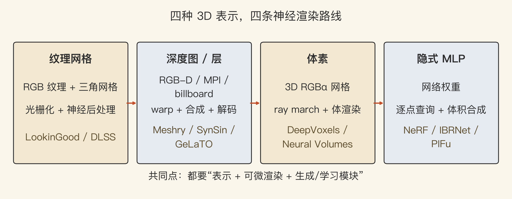
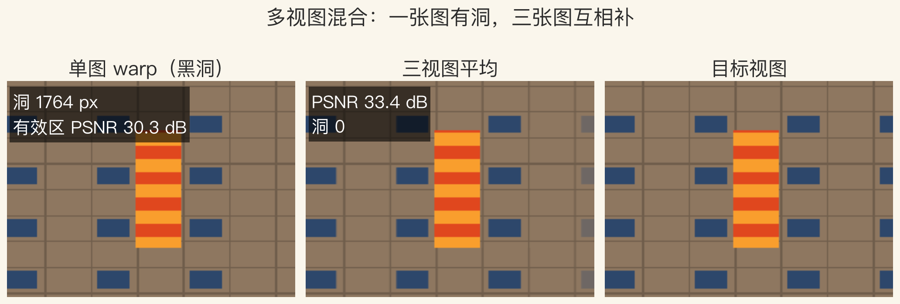
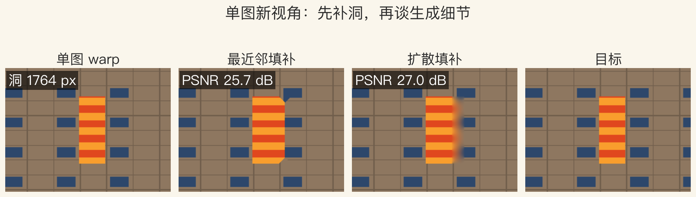

第 14 章 · 神经渲染
照片不够，能生成新视角吗
前面几集假设已有照片和几何。
这一集问：没拍到的视角能生成吗。
网络参与建模和观看，不只做后处理。
本集用合成场景演示，不训练大模型。
依据：原书第 899–905 页
三个条件
数据多
算力强
可微渲染把图形学和网络接上
正课第一百二十四集
01 / 12
第 14 章 · 建模与观看
网络插在哪两步
建模：场景怎么存。
观看：新视角怎么画。
过去靠几何和图像处理。
现在两步都能让网络学。
依据：原书第 899 页
一条管线
前端：图像变特征
中间：学混合权重
后端：补洞、去噪、提分辨率
正课第一百二十四集
02 / 12
第 14 章 · 任务版图
六类任务，一张版图
语义照片合成、新视角合成。
自由视点视频、重打光。
人脸重演、人体重演。
都在划分用户控制和网络生成。
依据：原书第 900 页
三组
改内容：语义照片、重打光
改视角：新视角、自由视点
改人：人脸、人体
正课第一百二十四集
03 / 12
第 14 章 · 3D 表示
四种表示，四个抽屉
纹理网格：三角面加纹理。
深度图与层：一层层前后关系。
体素网格：把空间切成小方块。
隐函数：用一个连续函数表示。
依据：原书第 900 页
渲染方式
网格：光栅化
深度层：warp 与合成
体素：ray marching
隐函数：逐点查询
正课第一百二十四集
04 / 12
实验一 · 四种表示
看图：表示决定渲染
四条路线：网格、深度层、体素、隐式 MLP。
每条路线标了代表方法和渲染动作。
共同点：可存的表示、可微渲染、学习模块。
看到新系统先问：场景存在哪，图怎么画。
依据：原书第 900 页

四种 3D 表示与四条神经渲染路线｜程序生成，未用教材或论文原图
正课第一百二十四集
05 / 12
第 14 章 · 混合与神经编码
先 warp 图像，还是先 warp 特征
deep blending：学逐像素混合权重。
LookinGood：U-Net 给纹理网格渲染补洞。
Free View Synthesis：源图编码成 neural codes。
Deferred Neural Rendering：学 neural texture map。
依据：原书第 902 页
两组做法
先 warp 彩色图，再让网络修
先把图变成特征，再 warp 特征
一个修结果，一个改中间表示
正课第一百二十四集
06 / 12
实验二 · 多视图混合
看图：一张有洞，三张互补
单图 warp 留下 1,764 个洞。
三张源图等权平均把洞补到 0。
单图有效区 PSNR 30.29 分贝。
三视图 PSNR 33.39 分贝，高 7.70 分贝。
依据：本集实验

单图 warp / 三视图平均 / 目标，洞 1764px｜程序生成，未用教材或论文原图
正课第一百二十四集
07 / 12
第 14 章 · 深度图与层
层与 billboard：把深度做聪明
Meshry：每幅图加深度图算外观向量。
Li 等：MPI 多层平面，AdaIN 调外观。
GeLaTO：少量定向 billboard 加神经纹理。
SynSin：单图生成特征 F 和深度 D。
依据：原书第 902–903 页
代价
保留图像式渲染的效率
层数、深度质量、透明边界都难
Semantic View Synthesis 从语义图建 MPI
正课第一百二十四集
08 / 12
实验三 · 传统补洞
看图：补洞能填满，不等于还原
最近邻填补 PSNR 25.69 分贝。
经典扩散填补 27.05 分贝，高 1.36 分贝。
两个方法都把 1,764 个洞填满。
条纹被拉成台阶或糊开，结构没回来。
依据：本集实验

最近邻 / 扩散填补，PSNR 25.69 vs 27.05｜程序生成，未用教材或论文原图
正课第一百二十四集
09 / 12
第 14 章 · 体素与隐式
体素、隐式、邻图查询
DeepVoxels：为物体学三维神经编码。
Neural Volumes：多视图变三维 RGBα 体积。
隐函数常用坐标 MLP 实现。
IBRNet：从邻近输入图采样神经特征。
依据：原书第 903–905 页
三条路线
体素：把空间切成格子
隐式：把空间写成函数
IBRNet：把邻近照片当查询库
正课第一百二十四集
10 / 12
第 14 章 · 能力与边界
可控，但不等于可靠
视角、外观、表情、人体动作可控。
数据没覆盖的角度会编。
遮挡严重的区域会糊。
人脸和人体要防身份漂移。
依据：原书第 899–905 页
该问什么
输入几张图、要不要深度
能不能实时
换视角会不会闪、换外观会不会改身份
正课第一百二十四集
11 / 12
收束 · 下一集
总结：四个抽屉，三类控制
神经渲染把网络放进建模和观看两端。
六类任务、四种表示。
方法在学混合、学补洞、学特征、学体积。
下一集：空间计算、VR 与 AI 视频。
依据：原书第 899–905 页
三个问题
场景存在哪
图怎么画
网络学什么
正课第一百二十四集
12 / 12